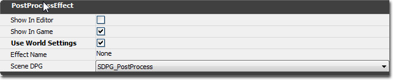
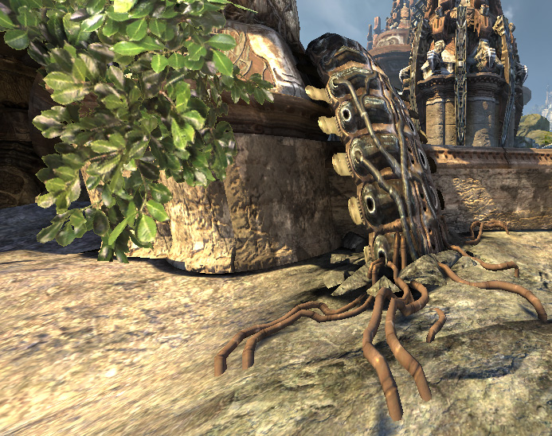
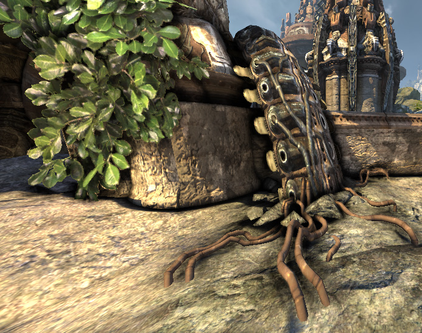
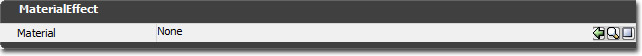

UDN
Search public documentation:
PostProcessEffectReferenceKR
English Translation
日本語訳
中国翻译
Interested in the Unreal Engine?
Visit the Unreal Technology site.
Looking for jobs and company info?
Check out the Epic games site.
Questions about support via UDN?
Contact the UDN Staff
日本語訳
中国翻译
Interested in the Unreal Engine?
Visit the Unreal Technology site.
Looking for jobs and company info?
Check out the Epic games site.
Questions about support via UDN?
Contact the UDN Staff
포스트 프로세스 이펙트 참고서
문서 변경내역: Jeff Wilson 작성. 홍성진 번역.
개요
공용 세팅 (PostProcessEffect)

Post Process Effect (포스트 프로세스 이펙트)- Show In Editor (에디터에 표시) - 'bShowInEditor'(에디터에 표시할지) 프로퍼티는 에디터 뷰포트는 물론 게임에서의 표시여부를 토글할 수 있는 전 노드 공용 프로퍼티입니다. 실시간 시각화 등에 좋기는 합니다만, 그냥 켜 두면 모션 블러나 뎁스 오브 필드 등의 작동에 관여할 수도 있습니다.
- Show In Game (게임에 표시) - 이펙트를 게임에 적용할지 여부입니다. 보통 어떤 동작 도중에만 켜고 싶은 포스트 프로세스 체인 내 이펙트 꾸러미가 있을 때 쓰입니다.
- Use World Settings (월드 세팅 사용) - 체크하지 않으면 포스트 프로세스 체인 내의 이펙트 기본값으로부터 포스트 프로세스 세팅을 받습니다. 체크하면 현 레벨의 WorldInfo (월드인포) 또는 현재 플레이어를 아우르는 포스트 프로세스 볼륨의 세팅으로부터 포스트 프로세스 세팅이 이 이펙트를 덮어쓰게 됩니다. 월드인포 포스트 프로세스 세팅은 보기->월드 프로퍼티 ->WorldInfo->DefaultPostProcessSettings 를 통해 접근할 수 있습니다.
- Effect Name (이펙트 이름) - 이펙트의 이름입니다.
- Scene DPG (씬 깊이 우선권 그룹) - DPG(Depth Priority Group, 깊이 우선권 그룹)은 이펙트가 상주하는 곳입니다. 모든 디폴트 포스트 프로세스 이펙트에 대해 이 옵션을 SDPG_PostProcess 로 설정해야 합니다. 그러나 유저 제작 머티리얼에 대해서는 이 값을 바꿔줘야 할 수도 있습니다.
앰비언트 오클루전 이펙트 (AmbientOcclusionEffect)
 Color (색)
오클루전 팩터가 계산된 후에는 0~1 범위에 있게 됩니다. 전체 씬이 아닌 딱 원하는 부분만 어둡게 하려면 밝기와 대비를 약간 조절해 줄 필요가 있습니다.
Color (색)
오클루전 팩터가 계산된 후에는 0~1 범위에 있게 됩니다. 전체 씬이 아닌 딱 원하는 부분만 어둡게 하려면 밝기와 대비를 약간 조절해 줄 필요가 있습니다.
- Occlusion Color (오클루전 색) - 가려짐 효과가 많이 발생하는 곳의 씬 색을 대체하게 될 색입니다.
- Occlusion Power (오클루전 세기) - 계산된 오클루전 값에 적용할 세기입니다. 세 질수록 대비가 심해지게 됩니다.
- Occlusion Scale (오클루전 스케일) - 계산된 오클루전 값에 적용할 스케일 값입니다. 불행히도 오클루전 세기와 스케일은 커플이기에 한 값을 바꾸면 다른 값도 만져줘야 적절해 집니다.
- Occlusion Bias (오클루전 편향) - 계산된 오클루전 값에 적용할 편향치 입니다.
- Min Occlusion (최소 오클루전) - 모든 변형이 적용된 후의 최소 오클루전 값입니다. 어두운 부분이 '너무 어둡지' 않게 하는 데 좋습니다.
- Angle Based SSAO (앵글 기반 SSAO) - 참이면 앵글 기반 앰비언트 오클루전을 사용해서 품질 향상, 노이즈 감소, 디테일 추가, 평평한 면의 그늘짐 방지, 볼록 부분의 눈부심 방지 등의 효과를 얻습니다. 이 세팅을 켜면 다른 세팅을 재조정해 줘야 할 수도 있습니다.
- Occlusion Radius (오클루전 반경) - 오클루더의 각 픽셀 주변을 검사할 월드 유닛 단위의 거리입니다. 이 세팅은 성능에 영향을 끼칩니다. 값이 낮을 수록 빠릅니다.
- Occlusion Quality (오클루전 품질) - 앰비언트 오클루전 이펙트의 품질입니다. 이 세팅은 성능에 영향을 끼칩니다. 낮은 품질이 성능도 최상이고 게임플레이에도 적합합니다. 중간 품질은 프레임 간의 노이즈를 부드럽게 합니다만 성능 비용은 늘어납니다. 높은 품질은 다운샘플링을 하지 않으며 노이즈의 빈도도 훨씬 높습니다.
- Occlusion Fadeout Min Distance (오클루전 페이드아웃 최소 거리) - 오클루전 팩터를 사라지기 시작하게 할 월드 유닛 거리입니다. 스카이박스의 부작용을 숨기는 데 좋습니다.
- Occlusion Fadeout Max Distance (오클루전 페이드아웃 최대 거리) - 오클루전 팩터가 완전히 사라지는 월드 유닛 거리입니다.
- Halo Distance Threshold (후광 거리 한계점) - 오클루더가 다른 오브젝트로 간주할 픽셀 앞까지의 월드 유닛 거리입니다. 일인칭 무기와 같은 근처 오브젝트의 후광 구역을 식별하는 데 이 한계점 값을 사용합니다.
- Halo Distance Scale (후광 거리 스케일) - 원거리 픽셀에 대한 후광 거리 한계점을 늘리기 위해 사용하는 스케일 팩터입니다. 값을 .1로 주면 10 월드 유닛 거리의 후광 거리 한계점이 1 커지게 됩니다.
- Halo Occlusion (후광 오클루전) - 후광에 관여하도록 결정된 샘플에 할당된 오클루전 팩터입니다. 값을 0으로 주면 해당 샘플에 대해서는 풀 오클루전이 되며, 값이 높아질 수록 이차적으로(quadratically) 감소하는 오클루전 값으로 매핑됩니다.
- Edge Distance Threshold (에지 거리 한계점) - 에지로 인식해서 뿌얘지지 않도록 하기 위한 두 픽셀간 깊이의 월드 유닛 거리입니다.
- Edge Distance Scale (에지 거리 스케일) - 원거리 픽셀에 대한 에지 거리 한계점을 늘리기 위한 스케일 값입니다. 값을 .001 로 주면 1000 월드 유닛의 에지 거리 한계점이 1 유닛 커지게 됩니다.
- Filter Distance Scale (필터 거리 스케일) - 화면 공간의 커널(핵심) 크기에 매핑시킬 월드 유닛 거리입니다. 노이즈를 더 남기는 대신 원거리 픽셀에 대한 필터 커널 크기를 줄이고 디테일을 유지하는 데 좋습니다.
- History Convergence Time (히스토리 수렴 시간) - 오클루전 히스토리의 언제쯤 수렴시킬지를 정합니다. 시간이 길 수록 (.5초) 프레임간의 스무딩 작업을 더 많이 하여 노이즈를 줄입니다만 히스토리 탈색은 심해집니다.
버전
요 이펙트는 2007년 12월 QA 빌드 에 처음 도입되었습니다. 부가 세팅은 2008년 2월 QA 빌드 에 추가되었습니다.시각화 모드
이 세팅을 만질 때는 다음의 시각화 모드를 사용하는 것이 좋습니다. 세팅 일부는 효과가 아주 미묘해서 실제 효과를 알아보려면 오클루전 조건 자체를 봐야 할 수도 있습니다. 앰비언트 오클루전이 씬에 미치는 영향을 조절하는 표시 플랙은 둘 있습니다:- 에디터의 "뷰포트 옵션 / 표시 / 포스트 프로세스 플랙 / 화면 공간 앰비언트 오클루전" (게임내에서 콘솔 명령 "show SSAO"로 토글 가능. 예전 콘솔 명령은 "ToggleAO")
- 에디터의 "뷰포트 옵션 / 표시 / 포스트 프로세스 플랙 / 화면 공간 앰비언트 오클루전 시각화" (게임내에서 콘솔 명령 "show VisualizeSSAO"로 토글 가능. 예전 콘솔 명령은 "ToggleScene")

같은 씬에 앰비언트 오클루전을 키면:
앰비언트 오클루전 시각화 모드를 사용한 같은 씬입니다. 이 모드를 사용하면 뭐가 어떻게 돌아가는지 훨씬 쉽게 알아볼 수 있습니다. 시각화가 씻겨 나가 버리니, 켜 둔 블룸 효과가 있으면 잠시 꺼두셔도 좋습니다.블러 이펙트 (BlurEffect)
 BlurEffect (흐려짐 효과, 블러 이펙트)는 완전 해상도 씬 컬러에다 gaussian(가우시안) 블러를 적용합니다. 콘솔용으로는 최적화되지 않았지만, 고해상도 미리-렌더링된 시네마틱 을 부드럽게 하는 데는 좋습니다.
Blur Effect (블러 이펙트)
BlurEffect (흐려짐 효과, 블러 이펙트)는 완전 해상도 씬 컬러에다 gaussian(가우시안) 블러를 적용합니다. 콘솔용으로는 최적화되지 않았지만, 고해상도 미리-렌더링된 시네마틱 을 부드럽게 하는 데는 좋습니다.
Blur Effect (블러 이펙트)
- BlurKernelSize (블러 커널 크기) - 씬 컬러를 흐리게 할 블러 커널의 픽셀 반경입니다. 지원되는 가장 작은 블러 단위는 1, 즉 현재 픽셀의 각 면에 있는 픽셀 하나만 블러 도중 가중된다는 뜻입니다. 가장 큰 값은 15입니다.
버전
요 이펙트는 2009년 7월 QA 빌드에 처음 도입되었습니다.위버 포스트 프로세스 이펙트 (UberPostProcessEffect)
 UberPostProcessEffect 가 수행하는 작업은: 뎁스 오브 필드, 컬러 그레이딩, 톤 매핑, 모션 블러, 블룸, 이미지 그레인 등입니다.
렌더 효율을 높이기 위해 이들 모두 한 노드에 꾸려넣었습니다.
씬 톤 매핑에 사용되는 파라미터로, 다음 식이 사용됩니다:
UberPostProcessEffect 가 수행하는 작업은: 뎁스 오브 필드, 컬러 그레이딩, 톤 매핑, 모션 블러, 블룸, 이미지 그레인 등입니다.
렌더 효율을 높이기 위해 이들 모두 한 노드에 꾸려넣었습니다.
씬 톤 매핑에 사용되는 파라미터로, 다음 식이 사용됩니다:
Color0 = ((InputColor - SceneShadows) / SceneHighLights) ^ SceneMidTones Color1 = Luminance(Color0) OutputColor = Color0 * (1 - SceneDesaturation) + Color1 * SceneDesaturationScene Color 씬 컬러
- SceneShadows (씬 그림자) - 검정에 매핑되는 색을 조절하는 프로퍼티입니다. 이 값보다 R, G, B 색이 낮으면 0, 검정으로 변환됩니다.
- SceneHighlights (씬 하이라이트) - 하양에 매핑되는 색을 조절하는 프로퍼티입니다. 이 값보다 R, G, B 색이 높으면 1, 하양으로 변환됩니다.
- SceneMidTones (씬 미드톤) - 감마 커브를 제어하는 프로퍼티로, 근본적으로는 씬 그림자 및 씬 하이라이트 매핑이 일어났을 경우 씬에 대비를 얼마나 줄 것인가를 결정합니다.
- SceneDesaturation (씬 채도감소) - 씬 컬러 채도를 얼마나 감소시킬지 정합니다. 1.0 값을 주면 채도를 완전 탈색시켜 그레이스케일로 만듭니다.
- ToneMapper Type (톤매퍼 유형) - 렌더링된 HDR 색이 화면상에 표시되는 LDR 색으로 변경되는 방식을 정의합니다. "Off" 는 가장 빠르지만 밝은 색이 제한되어 무언가 찜찜하게 불탄 듯한 색이 납니다. 약간의 성능 비용이 드는 "Filmic" 메서드로 그러한 것을 고칠 수 있습니다. "Custom" 메서드는 성능 비용이 조금 더 들지만, 대비 강조 부분을 조정할 수 있는 프로퍼티 "Toe Factor" (토 팩터)가 가능해 집니다. 이는 HDR to LDR 함수의 끝부부분을 가리킵니다.
- Max Velocity (최대 속도) - 최대 속도로, 실제적으로는 블러의 양을 제한합니다.
- Motion Blur Amount (모션 블러 양) - 블러 적용양의 스케일 값입니다.
- Full Motion Blur (풀 모션 블러) - 참이면 모든 (스태틱/다이내믹) 오브젝트에 블러가 적용됩니다. 거짓이면 이동하는 오브젝트에만 적용됩니다.
- Camera Rotation Threshold (카메라 로테이션 임계값) - 한 프레임에 이 정도까지 카메라가 로테이트(회전)되어도 모션 블러를 유지합니다.
- Camera Translation Threshold (카메라 트랜슬레이션 임계값) - 한 프레임에 언리얼 유닛으로 이 정도까지 카메라가 트랜슬레이트되어(옮겨져)도 모션 블러를 유지합니다.
- Bloom Scale (블룸 스케일) - 블룸 컬러에 적용할 스케일 값입니다.
- Bloom Threshold (블룸 임계값) - 포스트 프로세스에서 블룸에 관여시킬 픽셀 색의 컴포넌트(R,G,B) 최소값을 정합니다.
- Bloom Tint (블룸 색조) - 블룸 컬러에 대해 곱할 색입니다.
- Bloom Screen Blend Threshold (블룸 화면 혼합 임계값) - 현재 픽셀이 가질 수 있고 블룸에 관여할 수도 있는 최대 씬 컬러 휘도 값을 정합니다. 포토샵의 화면 블렌드 모드와 같은 식으로 작동하여 이미 밝은 지역에 블룸을 추가했을 때의 과포화를 방지합니다.
- Scene Multiplier (씬 곱수) - 씬 컬러를 읽을 때마다 적용되는 곱수입니다.
- Blur Bloom Kernel Size (블러 블룸 커널 크기) - 블룸 이펙트의 반경입니다.
- Depth Of Field Type (뎁스 오브 필드 타입) - "SimpleDOF" (빠름, 1/4 해상도로 가우시안 블러 사용), 고품질이나 느릴 수 있는 "ReferenceDOF" (디스크 모양 보케, 실시간 게임에는 미사용), 커스텀 보케 텍스처를 지정할 수 있는 고품질 "BokehDOF" (D3D11 전용) 중 하나를 선택할 수 있습니다.
- Depth of Field Type (뎁스 오브 필드 타입)
- SimpleDOF 단순. 빠르며, 포커스 아웃 영역의 가우시안 블러링을 기반으로 합니다. 콘솔에 최적화되어 있습니다.
- ReferenceDOF 참조. 고품질(전해상도)이며, 커널 반경에 따라 퍼포먼스가 결정됩니다. 출하 게임용으로 최적화되지는 않았습니다.
- BokehDOF 보케. 고품질이며, 커스텀 보케 텍스처를 지원합니다. 자세한 것은 Bokeh Depth Of Field KR 페이지를 참고해 주십시오. (DirectX 11 전용)
- Bokeh Texture (보케 텍스처)
- Depth of Field Quality (뎁스 오브 필드 품질)
- Falloff Exponent (감쇠 지수) - 블러가 얼마나 빨리 감쇠될 지에 영향을 끼칩니다. 지수 1 값은 선형 감쇠입니다.
- Blur Kernel Size (블러 커널 크기) - 블러에 사용될 커널의 픽셀 단위 크기입니다.
- Max Near Blur Amount (블러 근처 최대량) - 포커스 면 앞의 오브젝트에 적용할 블러 상한선입니다.
- Max Far Blur Amount (블러 건너 최대량) - 포커스 면 뒤의 오브젝트에 적용할 블러 상한선입니다.
- Modulate Blur Color (블러 색 변조) - 블러 색을 변조시킬 색입니다.
- Focus Type (포커스 유형) - 포커스 지점 계산법을 정합니다.
- FOCUS_Distance (거리) - 현재 뷰에서의 거리를 사용합니다. 포커스 지점은 현재 뷰와 함께 이동합니다.
- FOCUS_Position (위치) - 월드 공간 위치를 사용합니다. 포커스 지점은 월드상의 고정된 지점입니다.
- Focus Inner Radius (포커스 내부 반경) - 포커스의 반경입니다. 포커스 반경의 중심점에 항상 초점을 맞추며, 지정된 감쇠 지수에 따라 포커스 반경 가장자리에서 가장 희미해 지도록 포커스 양이 감쇠됩니다.
- Focus Distance (포커스 거리) - 포커스까지의 거리로, FOCUS_Distance 가 선택됐을 때 사용됩니다.
- Focus Position (포커스 위치) - 포커스의 월드 위치로, FOCUS_Position 이 선택됐을 때 사용됩니다.
머티리얼 이펙트

Material Effect (머티리얼 이펙트)- Material (머티리얼) - 머티리얼 이펙트는 파라미터로 머티리얼을 받아, 화면상에 렌더링합니다. 전형적으로 이 머티리얼에는 'SceneTexture' 노드를 포함합니다. 현재 씬을 샘플링한 다음 다른 머티리얼 표현식과 혼합하여 복잡한 이펙트를 구성할 수 있습니다. 'SceneDepth' 라는 표현식도 있는데, 깊이 기반 효과용으로 Z 버퍼를 샘플링하는 겁니다. 자세한 정보는 포스트 프로세스 머티리얼 페이지를 참고하시기 바랍니다.